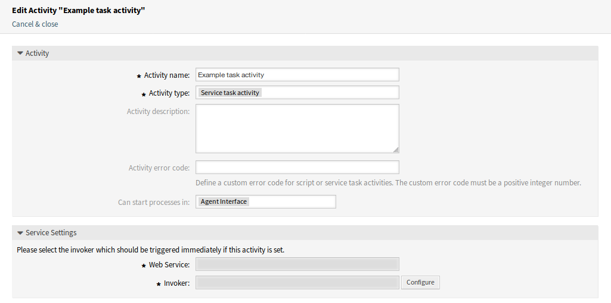
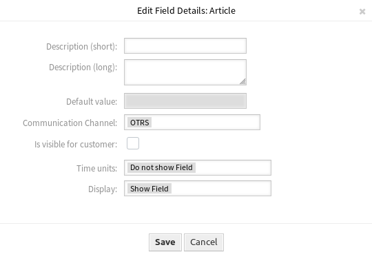

Folyamatkezelés¶
A teljesítmény növelése és az emberi hibák minimalizálása követelmény bármilyen méretű szervezetnél. Ezt a szükségletet meghatározott folyamatok és munkafolyamatok fedik le az ismétlődő feladatoknál. Biztosítsa, hogy az összes szükséges információ elérhető legyen a megfelelő helyen, és a kapcsolattartók tájékoztatást kapjanak a felelősségükről, mint például az információk hozzáadása, a kérések jóváhagyása stb.
Az OTRS ezt a követelményt a folyamatkezeléssel támogatja. A folyamatjegyek segítenek a szükséges kötelező és opcionális mezők (lásd: Dinamikus mezők) használatában, amely információkat nem felejtik el a jegy létrehozásakor vagy a folyamat későbbi lépéseiben. A folyamatjegyeket egyszerűen kezelhetik az ügyfél-felhasználók és az ügyintézők, így nem szükséges intenzív képzés.
A folyamatok teljes mértékben és hatékonyan megtervezhetők az OTRS előtétprogramján, hogy megfeleljenek a szervezet követelményeinek.
Használja ezt a képernyőt a folyamatok kezeléséhez a rendszeren. A folyamatkezelés képernyő a Folyamatok és automatizálás csoport Folyamatkezelés moduljában érhető el.
Folyamatok kezelése¶
Egy új folyamat létrehozásához:
- Kattintson az Új folyamat létrehozása gombra a bal oldalsávban.
- Töltse ki a szükséges mezőket.
- Kattintson a Mentés gombra.
- Adjon hozzá tevékenységeket, felhasználói feladat tevékenység-párbeszédablakokat, szekvenciafolyamokat és szekvenciafolyam-műveleteket.
- Állítsa az Állapot mezőt Aktív értékre.
- Állítsa üzembe az összes folyamatot.

Új folyamat létrehozása képernyő
Egy folyamat szerkesztéséhez:
- Kattintson egy folyamatra a folyamatok listájában.
- Módosítsa a mezőket és a folyamatútvonalat.
- Kattintson a Mentés vagy Mentés és befejezés gombra.
- Állítsa üzembe az összes folyamatot.
Egy folyamat másolásához:
- Kattintson a másolás ikonra a folyamatok listájának ötödik oszlopában.
- Kattintson az újonnan létrehozott folyamatra a szerkesztéséhez.
Egy folyamat törléséhez:
- Kattintson egy folyamatra a folyamatok listájában.
- Állítsa az Állapot mezőt Inaktív értékre.
- Kattintson a Mentés gombra. Egy új Inaktív folyamat törlése gomb fog megjelenni a bal oldalsávban.
- Kattintson az Inaktív folyamat törlése gombra.
- Kattintson a Törlés gombra a megerősítő képernyőn.
- Állítsa üzembe az összes folyamatot.
Figyelem
A folyamatok fájlba lesznek kiírva Perl-formátumban. Üzembe állítás nélkül az összes folyamat továbbra is ebben a gyorsítótárfájlban lesz, még akkor is ha törölték azokat vagy az Állapot beállítást Inaktív vagy Kivezetve értékre állították. Ne felejtse el üzembe állítani az összes folyamatot a módosítások után!
Adjon időt az ügyintézőknek, hogy befejezzék a futó folyamatjegyeket, mielőtt a folyamat törölve lenne. Lehetőség van megjelölni egy folyamatot törlésre, azaz úgy beállítani a folyamatot, hogy többé ne lehessen választani. A folyamatállapotok a következők lehetnek:
- Aktív
- A folyamatok használhatók új folyamatjegyekben.
- Kivezetve
- A folyamatok többé nem választhatók új jegyeknél, de a meglévő jegyek még használhatják a folyamatot.
- Inaktív
- A folyamatok ki vannak kapcsolva és nem használhatók új vagy meglévő jegyeknél.
Az összes folyamat üzembe állításához:
- Kattintson az Összes folyamat üzembe állítása gombra a bal oldalsávban.
Megjegyzés
Az új vagy módosított folyamatokat üzembe kell állítani, hogy hatással legyenek a rendszer viselkedésére. Az Állapot beállítás Aktív értékre állítása csak azt jelzi, hogy mely folyamatokat kell üzembe állítani.
Egy folyamat exportálásához:
- Kattintson az exportálás ikonra a folyamatok listájának negyedik oszlopában.
- Válasszon egy helyet a számítógépén az
Export_ProcessEntityID_xxx.ymlfájl mentéséhez.
Figyelem
Az exportált fájl csak magát a folyamatot tartalmazza, és nincsenek benne a folyamathoz szükséges Várólisták, Ügyintézők, Dinamikus mezők, stb.
Egy folyamat importálásához:
- Kattintson a Beállítás importálás felületi elem Tallózás… gombjára a bal oldalsávban.
- Válasszon egy előzőleg exportált
.ymlfájlt. - Kattintson a Folyamat-beállítás importálása gombra.
- Állítsa üzembe az összes folyamatot.
Megjegyzés
Egy folyamat importálása előtt továbbra is szükséges a Várólisták, Ügyintézők és Dinamikus mezők létrehozása, valamint a Rendszerbeállítások, amelyet az egyes folyamatok igényelnek az importálás előtt. Ha a folyamat Hozzáférés-vezérlési listák (ACL) használatát is igényli, akkor azokat szintén kézzel kell létrehozni.
Megjegyzés
Ha több folyamat van hozzáadva a rendszerhez, akkor használja a szűrődobozt egy bizonyos folyamat megkereséséhez azáltal, hogy egyszerűen begépeli a nevét a szűrőbe.
Folyamatelemek¶
A folyamatmodellező elemeinek neve hozzá lett igazítva a Business Process Model and Notation (BPMN) ISO elnevezési egyezményéhez. A következő feladat tevékenységek használhatók a folyamat alapvető elemeiként.
- Vezérelt feladat tevékenység
A vezérelt feladat tevékenységet a folyamatkezelés modul hajtja végre, és automatikusan beállíthat dinamikus mező értékeket vagy jegyeket kezelhet.

Vezérelt feladat tevékenység ablak
A következő beállítások akkor érhetők el, ha hozzáadja vagy szerkeszti ezt az erőforrást. A csillaggal jelölt mezők kitöltése kötelező.
- Tevékenység neve *
- Ennek az erőforrásnak a neve. Bármilyen típusú karakter beírható ebbe a mezőbe, beleértve a nagybetűket és a szóközt is.
- Tevékenység típusa *
A következő típusú feladat tevékenységek használhatók:
- Vezérelt feladat tevékenység (most ez van kiválasztva)
- Szolgáltatási feladat tevékenység
- Felhasználói feladat tevékenység
- Tevékenység leírása
- Adjon további információkat ehhez az erőforráshoz. Mindig ajánlott egy teljes mondattal kitölteni ezt a mezőt az erőforrás leírásaként a jobb érthetőségért.
- Tevékenység hibakódja
- Határozzon meg egy egyéni hibakódot a vezérelt vagy szolgáltatási feladat tevékenységekhez. Az egyéni hibakód csak pozitív egész szám lehet.
- A folyamatok kezdődhetnek ebben
Meghatározza, hogy a folyamatokat hol indíthatják el az ügyintézők vagy az ügyfél-felhasználók. Egy folyamat a következő felületeken indítható el:
- Ügyintézői felület
- Ügyintézői és külső felület
- Külső felület
- Parancsfájl *
- Ebben a legördülő listában választható ki, hogy mely parancsfájlt kell azonnal aktiválni, ha a tevékenységet beállították. Kattintson a Beállítás gombra a parancsfájl paramétereinek (kulcs-érték párok) hozzáadásához.
- Szolgáltatási feladat tevékenység
A szolgáltatási feladat tevékenység egy webszolgáltatást használ a feladat elvégzéséhez.
Szolgáltatási feladat tevékenység ablak
A következő beállítások akkor érhetők el, ha hozzáadja vagy szerkeszti ezt az erőforrást. A csillaggal jelölt mezők kitöltése kötelező.
- Tevékenység neve *
- Ennek az erőforrásnak a neve. Bármilyen típusú karakter beírható ebbe a mezőbe, beleértve a nagybetűket és a szóközt is.
- Tevékenység típusa *
A következő típusú feladat tevékenységek használhatók:
- Vezérelt feladat tevékenység
- Szolgáltatási feladat tevékenység (most ez van kiválasztva)
- Felhasználói feladat tevékenység
- Tevékenység leírása
- Adjon további információkat ehhez az erőforráshoz. Mindig ajánlott egy teljes mondattal kitölteni ezt a mezőt az erőforrás leírásaként a jobb érthetőségért.
- Tevékenység hibakódja
- Határozzon meg egy egyéni hibakódot a vezérelt vagy szolgáltatási feladat tevékenységekhez. Az egyéni hibakód csak pozitív egész szám lehet.
- A folyamatok kezdődhetnek ebben
Meghatározza, hogy a folyamatokat hol indíthatják el az ügyintézők vagy az ügyfél-felhasználók. Egy folyamat a következő felületeken indítható el:
- Ügyintézői felület
- Ügyintézői és külső felület
- Külső felület
- Webszolgáltatás *
- Válassza ki a Webszolgáltatások egyikét a legördülő listából.
- Meghívó *
- Válasszon egy meghívót a webszolgáltatáshoz. Kattintson a Beállítás gombra a meghívó paramétereinek hozzáadásához.
- Felhasználói feladat tevékenység
A felhasználói feladat tevékenység akkor használható, ha a feladatot egy ügyintéző vagy egy ügyfél-felhasználó végzi el.

Felhasználói feladat tevékenység ablak
A következő beállítások akkor érhetők el, ha hozzáadja vagy szerkeszti ezt az erőforrást. A csillaggal jelölt mezők kitöltése kötelező.
- Tevékenység neve *
- Ennek az erőforrásnak a neve. Bármilyen típusú karakter beírható ebbe a mezőbe, beleértve a nagybetűket és a szóközt is.
- Tevékenység típusa *
A következő típusú feladat tevékenységek használhatók:
- Vezérelt feladat tevékenység
- Szolgáltatási feladat tevékenység
- Felhasználói feladat tevékenység (most ez van kiválasztva)
- Felhasználói feladat tevékenység-párbeszédablakok
Felhasználói feladat tevékenység-párbeszédablakokat rendelhet hozzá ehhez a tevékenységhez, ha az elemeket a bal oldali listából a jobb oldali listába húzza az egérrel. Az elemek rendezése a listán belül szintén lehetséges fogd és vidd módon.
Kattintson az Új felhasználói feladat tevékenység-párbeszédablak létrehozása gombra új párbeszédablakok létrehozásához.
Példafolyamat¶
A folyamatok sokkal összetettebbek az OTRS-ben lévő egyéb erőforrásoknál. Egy folyamat létrehozásához számos lépést kell elvégeznie. A következő fejezetek azt mutatják be, hogy hogyan kell meghatározni egy folyamatot a specifikációból és hogyan kell létrehozni a szükséges erőforrásokat. Nézzünk egy példát hogy meggyőzőbbé tegyük. Meg fogunk határozni egy könyvrendelési folyamatot.
Folyamatspecifikáció¶
A könyvrendelés folyamatnak négy állapota van.
- Az igény rögzítése
Mielőtt megrendelésre kerülne, az irodalom iránti igényt egy alkalmazott rögzíteni fogja. A példánkban a következő könyv szükséges:
Title: Prozessmanagement für Dummies Autor: Thilo Knuppertz ISBN: 3527703713
- Igazgató általi jóváhagyás
- A személyzeti részleg vezetőjének kell döntenie a megrendelésről. Elutasítás esetén az igazgatónak rögzítenie kell egy okot. Elfogadás esetén a megrendelés átadásra kerül a beszerzési osztálynak.
- Beszerzési osztály általi feldolgozás
- A beszerzésnek most az a feladata, hogy megtalálja, hogy a könyvet hol lehet a legjobb feltételekkel megrendelni. Ha nincs raktáron, akkor ez rögzíthető a megrendelésen. Sikeres megrendelés esetén a beszerzés rögzíteni fogja a beszállítót, az árat és a kézbesítés dátumát.
- Iktató általi feldolgozás
- A szállítmány meg fog érkezni a vállalathoz. A beérkező áruk részlege ellenőrzi a szállítmányt, és rögzíti a kézhezvétel dátumát. Most fogják értesíteni az alkalmazottat, hogy a megrendelése megérkezett és készen áll az átvételre.
A folyamatelemek bemutatása¶
Ha azt feltételezzük, hogy egy jegy ebben a munkafolyamatban egy olyan kísérődokumentumhoz hasonló szerepet tölt be, amely változásjegyzeteket fogadhat, akkor máris tiszta képet kapunk a folyamatjegyekről.
A példafolyamat elemzéséből a következő szükséges elemeket azonosíthatjuk:
- Lehetőségek adatok rögzítéséhez, legyen ennek a neve felhasználói feladat tevékenység-párbeszédablak.
- Ellenőrzések, amelyek képesek automatikusan reagálni a megváltozott adatokra, legyen ennek a neve szekvenciafolyam.
- Változások, amelyek egy folyamatjegyre alkalmazhatók egy folyamatjegy sikeres átmenetei után, legyen ennek a neve szekvenciafolyam-művelet.
- Egy lehetőség, hogy egynél több elérhető tevékenység-párbeszédablakot ajánljon fel. A példánkban ez akkor szükséges, ha az igazgatónak döntenie kell az Elfogadás és az Elutasítás között. Legyen ennek a neve tevékenység.
Most a tevékenységekkel, felhasználói feladat tevékenység-párbeszédablakokkal, szekvenciafolyamokkal és szekvenciafolyam-műveletekkel rendelkezünk a szükséges eszközzel a példánk egyéni lépéseinek modellezéséhez. Ami még mindig hiányzik, az egy olyan terület, ahol az egyes munkafolyamatoknál a lépések sorrendje megadható. Legyen ennek a neve folyamat.
Szükséges erőforrások létrehozása¶
A folyamat és annak részei létrehozása előtt a rendszer előkészítése szükséges. Várólisták, Ügyintézők és Dinamikus mezők meghatározására lesz szükségünk, valamint néhány Rendszerbeállítások áttekintésére és beállítására.
A következő Várólisták létrehozása szükséges:
- Vezetőség
- Alkalmazottak
- Beszerzés
- Postahivatal
A következő Ügyintézők létrehozása szükséges:
- Igazgató
- Alkalmazott
A következő Dinamikus mezők létrehozása szükséges:
| Objektum | Típus | Név | Címke | Lehetséges értékek |
|---|---|---|---|---|
| Jegy | Szöveg | Title |
Cím | |
| Jegy | Szöveg | Author |
Szerző | |
| Jegy | Szöveg | ISBN |
ISBN | |
| Jegy | Legördülő | Status |
Állapot |
|
| Jegy | Szöveg | Supplier |
Szállító | |
| Jegy | Szöveg | Price |
Ár | |
| Jegy | Dátum | DeliveryDate |
Kézbesítés dátuma | |
| Jegy | Dátum | DateOfReceipt |
Kézhezvétel dátuma |
Állítsa be a következő Rendszerbeállítások lehetőségeket:
-
- Engedélyezve
Ticket::Frontend::AgentTicketZoom###ProcessWidgetDynamicFieldGroups
Book→Title,Author,ISBNGeneral→StatusOrder→Price,Supplier,DeliveryDateShipment→DateOfReceipt
Ticket::Frontend::AgentTicketZoom###ProcessWidgetDynamicField
Author→ 1 – EngedélyezveDateOfReceipt→ 1 – EngedélyezveDeliveryDate→ 1 – EngedélyezveISBN→ 1 – EngedélyezvePrice→ 1 – EngedélyezveStatus→ 1 – EngedélyezveSupplier→ 1 – EngedélyezveTitle→ 1 – Engedélyezve
Megjegyzés
Ne felejtse el üzembe állítani a módosított rendszerbeállítási lehetőségeket.
Most menjen vissza a Folyamatkezelés képernyőre, és kattintson az Új folyamat létrehozása gombra. Töltse ki a szükséges mezőket.

Könyvrendelés – új folyamat létrehozása
Az új folyamat létrejött. Most már hozzáadhat néhány folyamatelemet.
Felhasználói feladat tevékenység-párbeszédablakok létrehozása¶
Kattintson a Felhasználói feladat tevékenység-párbeszédablakok elemre a bal oldalsávon lévő Elérhető folyamatelemek felületi elemben. Ez a művelet ki fogja nyitni a Felhasználói feladat tevékenység-párbeszédablakok lehetőségeit, és össze fogja csukni az összes többit egy harmonikaszerű hatást elvégezve. Kattintson az Új felhasználói feladat tevékenység-párbeszédablak létrehozása gombra.

Könyvrendelés – felhasználói feladat tevékenység-párbeszédablakok
A megnyílt felugró képernyőn töltse ki a Párbeszédablak neve, valamint a Leírás (rövid) mezőket. Ennél a példánál az összes többi mezőt az alapértelmezett értéken fogjuk hagyni.

Könyvrendelés – felhasználói feladat tevékenység-párbeszédablak hozzáadása
A felhasználói feladat tevékenység-párbeszédablakhoz történő mezők hozzárendeléséhez egyszerűen fogja meg a szükséges mezőket az Elérhető mezők tárolóból, és ejtse azokat a Hozzárendelt mezők tárolóba. A Hozzárendelt mezők tárolóban lévő sorrend olyan, ahogy a mezők a képernyőn lesznek. A sorrend módosításához egyszerűen fogd és vidd módszerrel rendezze át a mezőt a tárolón belül a megfelelő helyre.
Ebben a példában a következőket fogjuk használni:
- Az
Articlemező a megjegyzésekhez. - A
DynamicField_Title,DynamicField_Author,DynamicField_ISBNmezők a megrendelésnél összegyűjtendő adatokhoz. - A
DynamicField_Statusmező a Jóváhagyás kiválasztásához tartozó lehetőséggel.
Fogja meg ezeket a mezőket az Elérhető mezők tárolóból, és húzza át a Hozzárendelt mezők tárolóba.
Megjegyzés
Ezen a képernyőn az összes dinamikus mező a DynamicField_ előtagot kapja, mint például DynamicField_Title. Ne keverje össze a Title mezővel, amely a jegy címe.

Könyvrendelés – felhasználói feladat tevékenység-párbeszédablak mezők hozzáadása
Amint a mezők a Hozzárendelt mezők tárolóba lettek dobva, egy másik felugró ablak jelenik meg a mezővel kapcsolatos néhány részlettel. Meg fogjuk hagyni az alapértelmezett beállításokat, és csak az Article mezőknél kell meggyőződnünk arról, hogy a Kommunikációs csatorna mező OTRS értékre van-e állítva, és hogy a Látható az ügyfélnek lehetőség nincs-e bejelölve.
Könyvrendelés – felhasználói feladat tevékenység-párbeszédablak mezők szerkesztése
Miután az összes mező ki lett töltve, kattintson a Mentés és befejezés gombra a változtatások mentéséhez és a folyamatkezelés képernyőre való visszatéréshez.
Hozza létre a következő felhasználói feladat tevékenység-párbeszédablakokat ezekkel a mezőkkel:
Az igény rögzítése (már létre lett hozva korábban)
- Az
Articlemező a megjegyzésekhez. - A
DynamicField_Title,DynamicField_Author,DynamicField_ISBNmezők a megrendelésnél összegyűjtendő adatokhoz. - A
DynamicField_Statusmező a Jóváhagyás kiválasztásához tartozó lehetőséggel.
- Az
Jóváhagyás megtagadva
- Az
Articlemező a megjegyzésekhez. - A
DynamicField_Statusmező a Jóváhagyás megtagadva kiválasztásához tartozó lehetőséggel.
- Az
Jóváhagyva
- A
DynamicField_Statusmező a Jóváhagyva kiválasztásához tartozó lehetőséggel.
- A
Rendelés megtagadva
- Az
Articlemező a megjegyzésekhez. - A
DynamicField_Statusmező a Rendelés megtagadva kiválasztásához tartozó lehetőséggel.
- Az
Megrendelve
- A
DynamicField_Supplier,DynamicField_Price,DynamicField_DeliveryDatemezők a beszerzéshez. - A
DynamicField_Statusmező a Megrendelve kiválasztásához tartozó lehetőséggel.
- A
Szállítmány megérkezett
- A
DynamicField_DateOfReceiptmező az iktatónak. - A
DynamicField_Statusmező a Szállítmány megérkezett kiválasztásához tartozó lehetőséggel.
- A
Szekvenciafolyamok létrehozása¶
Kattintson a Szekvenciafolyamok elemre a bal oldalsávon lévő Elérhető folyamatelemek felületi elemben. Ez a művelet ki fogja nyitni a Szekvenciafolyamok lehetőségeit, és össze fogja csukni az összes többit egy harmonikaszerű hatást elvégezve. Kattintson az Új szekvenciafolyam létrehozása gombra.

Könyvrendelés – szekvenciafolyamok
A megnyílt felugró képernyőn töltse ki a Szekvenciafolyam neve mezőt. Ennél a példánál a Feltételkifejezések szakaszban csak egy feltételkifejezést és csak egy mezőt fogunk használni. Mindkettőnél hagyhatjuk a Kapcsolat típusa mezőt és értéken, és a mező illesztési típusát Szöveg értékként fogjuk használni.
Könyvrendelés – szekvenciafolyam hozzáadása
Miután az összes mező ki lett töltve, kattintson a Mentés és befejezés gombra a változtatások mentéséhez és a folyamatkezelés képernyőre való visszatéréshez.
Hozza létre a következő szekvenciafolyamokat:
Jóváhagyás (már létre lett hozva korábban)
Annak ellenőrzése, hogy a
DynamicField_Statusmező Jóváhagyás értékre van-e állítva.Jóváhagyás megtagadva
Annak ellenőrzése, hogy a
DynamicField_Statusmező Jóváhagyás megtagadva értékre van-e állítva.Jóváhagyva
Annak ellenőrzése, hogy a
DynamicField_Statusmező Jóváhagyva értékre van-e állítva.Rendelés megtagadva
Annak ellenőrzése, hogy a
DynamicField_Statusmező Rendelés megtagadva értékre van-e állítva.Megrendelve
Annak ellenőrzése, hogy a
DynamicField_Statusmező Megrendelve értékre van-e állítva.Szállítmány megérkezett
Annak ellenőrzése, hogy a
DynamicField_Statusmező Szállítmány megérkezett értékre van-e állítva.
Szekvenciafolyam-műveletek létrehozása¶
Kattintson a Szekvenciafolyam-műveletek elemre a bal oldalsávon lévő Elérhető folyamatelemek felületi elemben. Ez a művelet ki fogja nyitni a Szekvenciafolyam-műveletek lehetőségeit, és össze fogja csukni az összes többit egy harmonikaszerű hatást elvégezve. Kattintson az Új szekvenciafolyam-művelet létrehozása gombra.

Könyvrendelés – szekvenciafolyam-műveletek
A megnyílt felugró képernyőn töltse ki a Szekvenciafolyam-művelet neve és a Szekvenciafolyam-művelet modulja mezőket, majd kattintson a Mentés gombra. Egy új Beállítás gomb fog megjelenni a modul mezője mellett.

Könyvrendelés – szekvenciafolyam-művelet hozzáadása
Kattintson a Beállítás gombra, és adja hozzá a szükséges konfigurációs paraméter kulcsait és értékeit.

Könyvrendelés – szekvenciafolyam-művelet paraméterei
Miután az összes mező ki lett töltve, kattintson a Mentés és befejezés gombra a változtatások mentéséhez és a folyamatkezelés képernyőre való visszatéréshez.
Lásd még
Minden egyes modulnak megvannak a saját és különböző paraméterei. Nézze át a modul dokumentációját, hogy megismerje az összes kötelező és opcionális paramétert.
- DynamicFieldSet
- TicketArticleCreate
- TicketCreate
- TicketCustomerSet
- TicketLockSet
- TicketOwnerSet
- TicketQueueSet
- TicketResponsibleSet
- TicketSendEmail
- TicketServiceSet
- TicketSLASet
- TicketStateSet
- TicketTitleSet
- TicketTypeSet
Az összes szekvenciafolyam-művelet modul az örökölt Kernel/System/ProcessManagement/TransitionAction nevű helyen található.
Hozza létre a következő szekvenciafolyam-műveleteket:
Folyamatjegy áthelyezése a „Vezetőség” várólistába (már létre lett hozva korábban)
Akkor kell végrehajtani, ha a Jóváhagyás szekvenciafolyamot alkalmazzák.
Jegyfelelős megváltoztatása „Igazgatóra”
Akkor kell végrehajtani, ha a Jóváhagyás szekvenciafolyamot alkalmazzák.
Folyamatjegy áthelyezése az „Alkalmazottak” várólistába
Akkor hajtódik végre, ha:
- A Jóváhagyás megtagadva szekvenciafolyamot alkalmazzák.
- A Rendelés megtagadva szekvenciafolyamot alkalmazzák.
- A Szállítmány megérkezett szekvenciafolyamot alkalmazzák.
Jegyfelelős megváltoztatása „Alkalmazottra”
Akkor hajtódik végre, ha:
- A Jóváhagyás megtagadva szekvenciafolyamot alkalmazzák.
- A Rendelés megtagadva szekvenciafolyamot alkalmazzák.
- A Szállítmány megérkezett szekvenciafolyamot alkalmazzák.
Folyamatjegy áthelyezése a „Beszerzés” várólistába
Akkor kell végrehajtani, ha a Jóváhagyva szekvenciafolyamot alkalmazzák.
Folyamatjegy áthelyezése a „Postahivatal” várólistába
Akkor kell végrehajtani, ha a Megrendelve szekvenciafolyamot alkalmazzák.
Jegy lezárása sikeresen
Akkor kell végrehajtani, ha a Szállítmány megérkezett szekvenciafolyamot alkalmazzák.
Jegy lezárása sikertelenül
Akkor hajtódik végre, ha:
- A Jóváhagyás megtagadva szekvenciafolyamot alkalmazzák.
- A Rendelés megtagadva szekvenciafolyamot alkalmazzák.
Vannak olyan helyek, ahol ugyanazokat a szekvenciafolyam-műveleteket kell végrehajtani. Ezért észszerű lehetővé tenni a szekvenciafolyam-műveletek szabadon történő összekapcsolását a szekvenciafolyamokkal, hogy képes legyen újrahasználni azokat.
Tevékenységek létrehozása¶
Kattintson a Tevékenységek elemre a bal oldalsávon lévő Elérhető folyamatelemek felületi elemben. Ez a művelet ki fogja nyitni a Tevékenységek lehetőségeit, és össze fogja csukni az összes többit egy harmonikaszerű hatást elvégezve. Kattintson az Új tevékenység létrehozása gombra.
Könyvrendelés – tevékenységek
A megnyílt felugró képernyőn töltse ki a Tevékenység neve mezőt, és válassza ki a Felhasználói feladat tevékenység elemet a Tevékenység típusa legördülő listából.

Könyvrendelés – tevékenység hozzáadása
A tevékenységhez történő párbeszédablakok hozzárendeléséhez egyszerűen fogja meg a szükséges párbeszédablakokat az Elérhető felhasználói feladat tevékenység-párbeszédablakok tárolóból, és ejtse azokat a Hozzárendelt felhasználói feladat tevékenység-párbeszédablakok tárolóba. A Hozzárendelt felhasználói feladat tevékenység-párbeszédablakok tárolóban lévő sorrend olyan, ahogy a párbeszédablakok a Jegynagyítás képernyőn megjelennek. A sorrend módosításához egyszerűen fogd és vidd módszerrel rendezze át a párbeszédablakot a tárolón belül a megfelelő helyre.
Megjegyzés
Ez a sorrend különösen az első tevékenységben fontos, mivel az első felhasználói feladat tevékenység-párbeszédablak az egyetlen ennél a tevékenységnél, amely akkor jelenik meg, ha a folyamat elindul.
Ebben a példában csak Az igény rögzítése felhasználói feladat tevékenység-párbeszédablakot kell hozzárendelnünk. Fogja meg ezt a párbeszédablakot az Elérhető felhasználói feladat tevékenység-párbeszédablakok tárolóból, és húzza át a Hozzárendelt felhasználói feladat tevékenység-párbeszédablakok tárolóba.
Könyvrendelés – felhasználói feladat tevékenység-párbeszédablak hozzárendelése
Miután az összes mező ki lett töltve, kattintson a Mentés és befejezés gombra a változtatások mentéséhez és a folyamatkezelés képernyőre való visszatéréshez.
Hozza létre a következő tevékenységeket:
Az igény rögzítése (már létre lett hozva korábban)
Az igény rögzítése felhasználói feladat tevékenység-párbeszédablak hozzárendelése.
Jóváhagyás
A Jóváhagyás megtagadva és a Jóváhagyva felhasználói feladat tevékenység-párbeszédablakok hozzárendelése.
Rendelés
A Rendelés megtagadva és a Megrendelve felhasználói feladat tevékenység-párbeszédablakok hozzárendelése.
Beérkezés
A Szállítmány megérkezett felhasználói feladat tevékenység-párbeszédablak hozzárendelése.
Folyamat befejezve
Ez egy lehetséges felhasználói feladat tevékenység-párbeszédablakok nélküli tevékenység. A Jóváhagyás megtagadva, a Rendelés megtagadva vagy a Szállítmány megérkezett után lesz beállítva, és a folyamat végét ábrázolja.
Most már világosan láthatjuk, hogy a tevékenységek egy folyamatjegy pontosan meghatározott állapotai. Egy sikeres szekvenciafolyam után egy folyamatjegy az egyik tevékenységből a másikba kerül át.
Folyamatútvonal létrehozása¶
Fejezzük be a példánkat a kirakó utolsó hiányzó darabjával, a folyamattal mint a munkafolyamat leírójával. A mi esetünkben ez a teljes rendelési munkafolyamat. Egyéb folyamatok lehetnek az irodaszer rendelés vagy teljesen különböző folyamatok.
A folyamatnak van egy kezdőpontja, amely a kezdő tevékenységből és a kezdő felhasználói feladat tevékenység-párbeszédablakból áll. Bármely új könyvrendelésnél az első tevékenység első felhasználói feladat tevékenység-párbeszédablaka az első képernyő, amely megjelenik. Ha ezt kitöltik és elmentik, akkor a folyamatjegy létre lesz hozva, és követheti a beállított munkafolyamatot.
A folyamat tartalmazza az irányokat is, hogy a folyamatjegy hogyan mozoghat a folyamat során. Legyen ennek a neve folyamatútvonal. Ez a kezdő tevékenységből, egy vagy több szekvenciafolyamból (valószínűleg szekvenciafolyam-műveletekkel) és egyéb tevékenységekből áll.
Feltételezve, hogy a tevékenységek már hozzá lettek rendelve a felhasználói feladat tevékenység-párbeszédablakaihoz, fogjon meg egy tevékenységet a bal oldalsávon lévő Elérhető folyamatelemek felületi elemben található harmonikából, és húzza át a vászonterületre a folyamat-információk alá. Figyelje meg, hogy egy nyíl automatikusan elhelyezésre kerül a folyamat kezdetétől (fehér kör) a tevékenységhez. Ez az első tevékenység, és annak első felhasználói feladat tevékenység-párbeszédablaka az első képernyő, amely megjelenik a folyamat indításakor.
Könyvrendelés – első tevékenység a vásznon
Ezután húzzon egy másik tevékenységet is a vászonra. Most két tevékenységünk lesz a vásznon. Az első a kezdőponthoz kapcsolódik, és a másodiknak nincsenek kapcsolatai. Rámutathat az egérrel minden egyes tevékenységre a saját tevékenység-párbeszédablakaik felfedéséhez.

Könyvrendelés – második tevékenység a vásznon
Ezután hozzuk létre a folyamatútvonalat (kapcsolatot) a két tevékenység között. Ehhez a szekvenciafolyamokat fogjuk használni. Kattintson a szekvenciafolyamra a harmonikában, fogjon meg egy szekvenciafolyamot, és húzza át az első tevékenységen belülre. Amint a szekvenciafolyam át lett húzva, a szekvenciafolyam nyilának végpontja el lesz helyezve a folyamat kezdőpontja mellett. Fogja meg a szekvenciafolyam nyilának végpontját, és húzza be a másik tevékenységen belülre a tevékenységek közötti kapcsolat létrehozásához.

Könyvrendelés – első szekvenciafolyam a vásznon
Most, hogy a műveletek közötti folyamatútvonal meghatározásra került, hozzá kell rendelnünk a szekvenciafolyam-műveleteket a szekvenciafolyamhoz. Kattintson duplán a szekvenciafolyam címkéjére a vásznon, amely meg fog nyitni egy új felugró ablakot.

Könyvrendelés – első szekvenciafolyam-művelet hozzárendelése
Miután a szekvenciafolyam-műveletek hozzá lettek rendelve, kattintson a Mentés gombra, hogy visszatérjen a folyamat fő szerkesztőképernyőjére. Kattintson a Mentés gombra a vászon alatt az összes egyéb változtatás mentéséhez.
Fejezze be a folyamatútvonalat a következő tevékenységek, szekvenciafolyamok és szekvenciafolyam-műveletek hozzáadásával:
Az igény rögzítése (már létre lett hozva korábban)
Lehetséges szekvenciafolyam: Jóváhagyás
Kezdő tevékenység: Az igény rögzítése
Következő tevékenység: Jóváhagyás
Ha ennek a tevékenységnek a feltétele teljesül, akkor a jegy átkerül a Jóváhagyás tevékenységbe.
Ezenkívül a következő szekvenciafolyam-műveletek lesznek végrehajtva:
- Folyamatjegy áthelyezése a „Vezetőség” várólistába
- Jegyfelelős megváltoztatása „Igazgatóra”
Az Igény rögzítése tevékenység a folyamatjegy meghatározott lépése, ahol lehetőség van a Jóváhagyás szekvenciafolyamra. Ha ezt alkalmazzák, akkor a jegy át fog lépni a következő Jóváhagyás tevékenységbe, és a Folyamatjegy áthelyezése a „Vezetőség” várólistába és a Jegyfelelős megváltoztatása „Igazgatóra” szekvenciafolyam-műveletek lesznek végrehajtva. A Jóváhagyás tevékenységben a Jóváhagyás megtagadva és a Jóváhagyva felhasználói feladat tevékenység-párbeszédablakok lesznek elérhetők.
Jóváhagyás
Lehetséges szekvenciafolyam: Jóváhagyás megtagadva
Kezdő tevékenység: Jóváhagyás
Következő tevékenység: Folyamat befejezve
Ha ez illeszkedik, akkor a folyamatjegy át fog lépni a Folyamat befejezve tevékenységbe.
Ezenkívül a következő szekvenciafolyam-műveletek lesznek végrehajtva:
- Folyamatjegy áthelyezése az „Alkalmazottak” várólistába
- Jegyfelelős megváltoztatása „Alkalmazottra”
- Jegy lezárása sikertelenül
Lehetséges szekvenciafolyam: Jóváhagyva
Kezdő tevékenység: Jóváhagyás
Következő tevékenység: Rendelés
Ha ez illeszkedik, akkor a folyamatjegy át fog lépni a Rendelés tevékenységbe.
Ezenkívül a következő szekvenciafolyam-műveletek lesznek végrehajtva:
- Folyamatjegy áthelyezése a „Beszerzés” várólistába
Láthatjuk, hogy a jelenlegi tevékenységből, amely a folyamatjegy egy lépését határozza meg, egy vagy több lehetőség van ahhoz a szekvenciafolyamhoz, amelynek pontosan egy céltevékenysége van (és valószínűleg egy vagy több szekvenciafolyam-művelete).
Rendelés
Lehetséges szekvenciafolyam: Rendelés megtagadva
Kezdő tevékenység: Rendelés
Következő tevékenység: Folyamat befejezve
Ha ez illeszkedik, akkor a folyamatjegy át fog lépni a Folyamat befejezve tevékenységbe.
Ezenkívül a következő szekvenciafolyam-műveletek lesznek végrehajtva:
- Folyamatjegy áthelyezése az „Alkalmazottak” várólistába
- Jegyfelelős megváltoztatása „Alkalmazottra”
- Jegy lezárása sikertelenül
Lehetséges szekvenciafolyam: Megrendelve
Kezdő tevékenység: Rendelés
Következő tevékenység: Beérkezés
Ha ez illeszkedik, akkor a folyamatjegy át fog lépni a Beérkezés tevékenységbe.
Ezenkívül a következő szekvenciafolyam-műveletek lesznek végrehajtva:
- Folyamatjegy áthelyezése a „Postahivatal” várólistába
Beérkezés
Lehetséges szekvenciafolyam: Szállítmány megérkezett
Kezdő tevékenység: Beérkezés
Következő tevékenység: Folyamat befejezve
Ha ez illeszkedik, akkor a folyamatjegy át fog lépni a Folyamat befejezve tevékenységbe.
Ezenkívül a következő szekvenciafolyam-műveletek lesznek végrehajtva:
- Folyamatjegy áthelyezése az „Alkalmazottak” várólistába
- Jegyfelelős megváltoztatása „Alkalmazottra”
- Jegy lezárása sikeresen
A könyvrendelési folyamat teljes folyamatútvonala ezután így fog kinézni:

Könyvrendelés – folyamat befejezve
Miután befejezte a folyamatútvonalat, kattintson a Mentés és befejezés gombra a vászon alatt, hogy visszatérjen a folyamatkezelés képernyőre.
Kattintson az Összes folyamat szinkronizálása gombra a bal oldalsávban. Ez össze fog gyűjteni minden folyamat-információt az adatbázisból, és előállít egy gyorsítótárfájlt (Perl nyelven). Ez a gyorsítótárfájl tulajdonképpen a folyamatok beállítása, amelyet a rendszer a folyamatjegyek létrehozásához vagy használatához fog használni.
Megjegyzés
A folyamatokon elvégzett bármilyen változtatás a folyamat ismételt üzembe állítását igényli annak érdekében, hogy a változtatást visszajuttassa a rendszerbe.